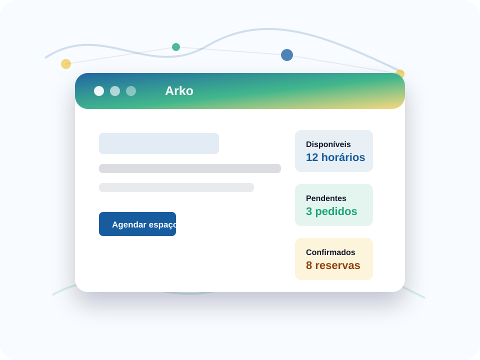

Calendário de espaços
Professores visualizam horários livres antes de solicitar o ambiente.
Agendamento de espaços escolares sem conflito de horário.
Um site para visualizar disponibilidade e solicitar salas, quadras, auditórios e laboratórios, com etapa de autorização pela coordenação.

Professores visualizam horários livres antes de solicitar o ambiente.
Dia, horário e local ficam registrados de forma clara.
A coordenação aprova os pedidos dentro do próprio site.
Professor consulta sexta-feira à tarde e vê horários livres antes de pedir reserva.
A solicitação registra turma, horário, sala e justificativa pedagógica.
Pedidos pendentes ficam visíveis para aprovação ou ajuste.
Reserva fictícia para aula prática de cabeamento e testes de conectividade.
A coordenação vê turma, responsável e justificativa antes de aprovar o uso do laboratório.
Interações nesta visita: 0
Espaços livres esta semana.
Aguardando coordenação.
Sem conflito no calendário.